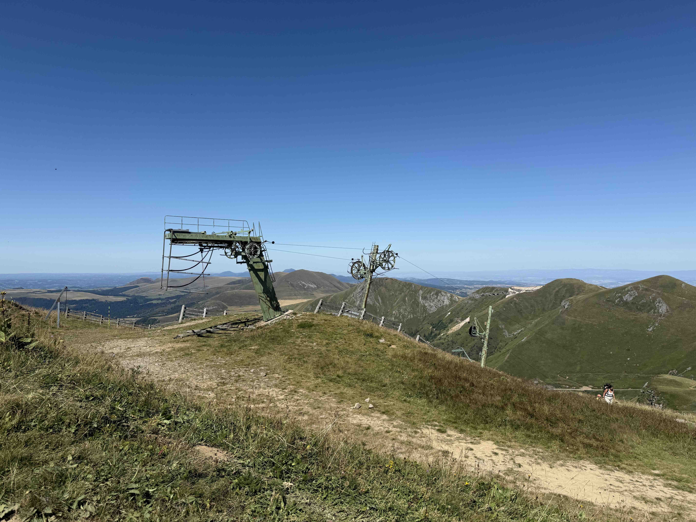

DEUX MONTAGNES
Cette composition représente une installation avec deux montagnes qui se posent à l’envers, reliées par des câbles métalliques, et inspirée par les téléphériques qui traversent la montagne. Le dispositif crée une illusion de reflet dans l’eau et renvoie à l’exploration du miroir et de la symétrie, que l’on retrouve chez Anish Kapoor. Ici, la montagne n’est pas seulement un volume, mais une idée en miroir, un jeu entre réel et imaginaire.





×